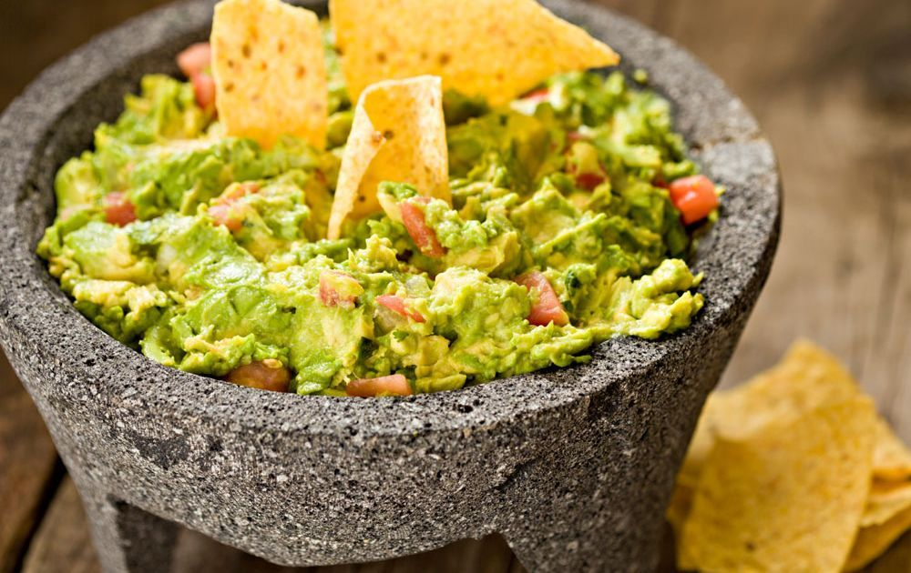

Odin Recipes
Guacamole

Description
If you love avocado, you'd love guacamole. This is a dish of mashed
avocado mixed with some other ingredients.
Ingredients
- 3 avocados - peeled, pitted, and mashed
- 1 lime, juiced
- 1 teaspoon salt
- ½ cup diced onion
- 3 tablespoons chopped fresh cilantro
- 2 roma (plum) tomatoes, diced
- 1 teaspoon minced garlic
- 1 pinch ground cayenne pepper (Optional)
Steps
- In a medium bowl, mash together the avocados, lime juice, and salt.
- Mix in onion, cilantro, tomatoes, and garlic.
- Stir in cayenne pepper. Refrigerate 1 hour for best flavor, or serve immediately.
Home
Next